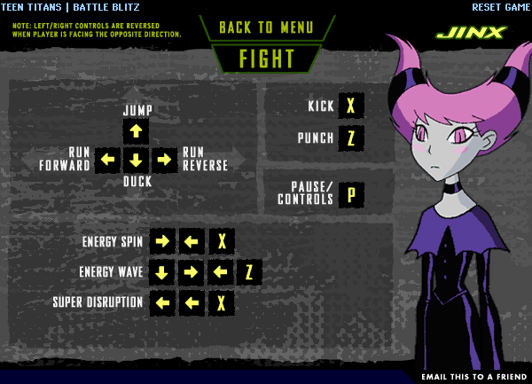
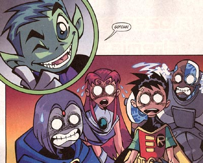
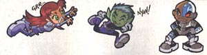
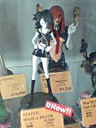
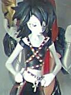
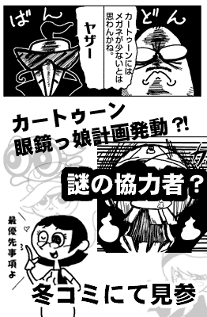
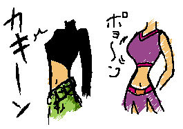

{kind=link}
{kind=link}

(日記とか言うモノ)
本年度ものこりわずか。さあ、そろそろ初詣の準備を・・・
って、TTのゲームやってましたよ。だってチャンネル争い負けて紅白になっちゃったし・・・
JINXが使えるなんて情報はいったんだもの・・・・

ここから入って、普通にはじめて、キャラチョイス画面になったら「PLAY
AS VILLAINS」をクリックじゃ！
はあーん、もうどうにでもしてっ！ まさにこの１年な終わり方・・・
描かないつもりだったのに書いてしまった・・・コミケ漫画日記2＞■
・・・描かなきゃよかった・・・・・
すっかりコミケな人になってしまったスカポン太です。
今日はまた一つコミケ用語を覚えました。
「カベサークル」
なんか、行列できるような大手っつうか売れ筋のサークルさんはカベ際に陣取ることができるようなんですな。まあ、へんな行列があんな狭いとこの中央にでもできたら他に迷惑ってことなんでしょう。客層がちょっと異様な気がしないでもなかったですが(笑)
あいかわず、コミケのリズムが身体になじんでないようで、ピークからちょっぴり遅れての入場。
でも今回は2:30着だったので、まだましだったようです。３時過ぎるとぞろぞろと帰り支度モードに。あぶねー。
私にとっては正直コミケにいったというより、個別訪問オフ会といってノリでした。
立ち寄った先でおしゃべりばかりで、ほとんどそれで時間を使ってました。
お会いできた方々、どーもありがとうございました。
エヴァラの若鶏さん、本参加は今日だったんですね。
湯呑さんお会いできて嬉しかったです。ご厚意ほんと感謝してます。それにしても、新作髪型のRRBとはぶっちぎりで先走ってますねえ。
Microbitのあやさん、ジェニー話たいへん楽しかったです。「脳味噌いじり萌え〜〜！」な、すさまじいジェニー愛へのマシンガントーク、圧倒されました。にしても、ティーンエイジロボット、ビリマン、インベーダージムと、CN入ってなきゃ分からない作品１つ、入ってても普通じゃわからない（しかもニック）日本未公開作品２つと、こちらもぶっちぎりの先走り本はなかなかよかったです。うーん凄すぎ。
本には「MLaaTRのパイロット版をみるために〜」とか書いた矢先にソレを見れたのは、偶然ではなく必然。愛は奇跡をよぶものさ〜。
それから、眠田さんちょっと時間がなくて、あまりお話できませんでしたが、またなにかの機会に。
全体に少しずつ、ジェニーが浸透していってる感触があって、いい感じでした。パワパフ初期のムーブメントがこんな感じだったんでしょうかねえ。（眠田さんは次のフィギュア王のコラムでジェニー出すって言ってるし）
あと、小町屋さんの方々、ほんとにありがとうございました。
打ち上げの飲み会ではなんだかいつも以上に異様に盛り上がって楽しかったです。ディープなネタが多すぎて、ここでは書けないけど・・・
うーん、ホントオフ会みたいなコミケだった・・・
今日は男性向けジャンルがかたまってた日だったらしいんですが、ほとんどスルーして、カートゥーン系以外で入手した本といえば・・・・
神社本
栄養ドリンク本
路上観察学本
バカアメコミ本
フランスコミック事情本（これは興味深かった）
メガネくん本（趣味です そーいやエヴァラでもメガネ本を入手・・・）
・・・・なんなんだこれは？
さてさて、今年もようやっと終わりな気分。もうなんにもしないぞ〜〜！ゴロゴロしてすごすんだい！
あ、年賀状・・・
コミケ漫画日記＞■
というわけで、スキを縫ってコミケ会場にいったものの、ちょっぴり残念な結末に。
しかもお会いできた方ともわずか数分だけ・・・
ううううう、パワーキャンディのリエさんやら、Microbitのあやさんらに会いたかったにょー。
それから、せっかく新井さんに教えていだたいたのにPROJECT Karmaさんとこはすでに撤収済みでした・・・
ちきしょう！くやしいから通販のお願いメールだしてやるっ！！（この年末に迷惑な・・・）
明日こそはっ！！
・・・・よく調べてみたら、Microbitは明日（3日目）参加でした・・・あわてすぎ。
いないはずだよねえ。むしろ、違うサークルに声かけないでよかったかも。
あれ？そーいやエヴァラも3日目になってたけど・・・あの若鶏さんは幻だったのか(笑)
今日からコミケが始まったようですが、今日はいきませんでした。
仕事はなかったんだけど、その分たまっていた家族サービスをたっぷりと。
自分の趣味や仕事だけやってるのも楽しいけど、それではいつか自分の首をしめかねないので。
自分の自由を勝ち取るために闘うタイプもいますが、私はどっちかっていうと、自分の自由を守るために争わないタイプ。だから妥協も遠回りもたくさん。真っ正直に信念を貫くのではなく、表向きは理解を示しながら、裏では全然聞いちゃいないという、ヤな人間だなあ。
明日は仕事ですが、こんな時期ですから、だらーりとしてることでしょうし、どうせ休みの間の宿題の話に決まってるので、スキみてばっくれる予定。やってられるかってーの。成功することを祈ろう。
正直コミケって怖かったんですが、（ほらネガティブなイメージが氾濫してるじゃないですか）一回経験しちゃってからそうでもなくなりました。まあ、世間で言われてるホニャララな場所やイベントにはまったく遭遇しないでピンポイントで訪問したので、全然印象が違うんでしょうけどね。
まあ、今回もどーせ、コミケの1000分の1の部分しか見ないだろうから、気が楽です。
・・・・あ、今気が付いたけど、年賀状全然やってない。どうしよう。そりゃあ知人相手にはメール年賀とか、笑い話ですむけど、仕事先とか年輩の親戚とかにはそうもいかんよなあ。
で、一年前の自分の日記を読み返してみると、「自分の時間が欲しい」とか書いてある。泣けてきた。
ニコロデオンを見始めたのもちょうど去年の年末から。それから1年でコミケがどーたら、ジェニーがどーたら言う自分なんて想像もできなかったね。
全然関係ないけど、新聞読んでいたら「世界中で一斉に本を読んだら、きっと世界は静かになるだろう」なんて書いてあった。まあ、そう言えるのは今だからだよなあ、とかヒネクレものは思う。黙読なんて習慣は最近のことで、昔は音読が普通。古代の図書館なんてみんながしゃべりまくりでうるさいなんて記述もあるくらいですし。世界中で一斉に本を読み出したら、そりゃあ騒がしいことになりそうですな(笑)
ところで、ケロロ軍曹ってアニメ化するんだね。ビックリ。しかもサンライズかよ・・・
へたすりゃ、これ、海外にもいくかも。いや最近の流れだとアリだもの。
今年最大にして最悪の忘年会が終わった・・・まあ、昨日の話なんだが。
ベロベロになって途中から憶えてなかったり、人数が多すぎてわけわかんなかったりというのが最悪なんではなく、「今年もご苦労様でした〜」と言えなかったのが最悪。29日まで仕事があるうえに、今日も仕事だったから。ああ、最悪。気分はもうまったくやる気ないってのにさ。
そんな気分をふっとばしにアメコミ屋にいってみたり。
TeenTaitans Go #2を買ってきました。今回はビーストボーイが主役。

今回とうとうコミックでもこの目に・・・（でも、まだ描き慣れてない印象が）

ページ下のおまけ漫画も相変わらず。むしろこっちのほうがスキだったり。
ついでに買い忘れてたCartoonCatoonsのコミックも買いました。KNDの回だったので欲しかったんです。でも、ちょこっとだけだった・・・他にジョニーにカウチキにデクスターにと、ちょっと詰め込みすぎだ！
CartoonCatoonsはやっぱりジョニーの回が売れ残りまくり。カーレッジが表紙飾ったときはあっというまに売り切れたのに・・・なぜかゴーストの回のバックナンバーはさばけていた。なぜ？ジョニー並にだぶついてたのに？
でも「袋」の回が残ってた・・・
宇宙怪人ゴーストがCNでやらなくなってからもうじき1年近くなろうとしている。さびしいよう。
パフィーのフィギィアとかあったのには驚いた。
よく見たらゼロゼロワンワンとか、ドラネコ大将とか、The
Cat in the Hat なんてのも。
とかいいつつ、スーパーガールのきわどいフィギュアに目がいってたり・・・
みえそでみえない・・・ってなにやってんだか。 _|￣|○
むしろMANGA DEATHが気になった。

このコミック、前から買おうかどうしようか悩んでる一冊。内容はこちらを参照のこと。
こっちはバッチリ赤パ・・・ゲフンゲフン。落ちてゆく・・・自分が落ちてゆく・・・
ところでゴスといえば、こんなサイトをご存じか？
その名もパワーゴスガールズ！！！！
ゴスの人たちってけっこうかわいいもの好きなのです。
聖・ヤッ！。
またビフォー・クリスマスを見てしまった・・・通算4回。ビデオを合わせれば・・げふんげふん
ついでに、ジョニーのクリスマスも見た。
一瞬だが、スージーがヴェルマのコスプレをするシーンがあって、それだけでこの話はお気に入りに。いいね！ジョニー。ふっはっ！
21日と違って、パワパフのあまり時間に流れたカートゥーンは、おお！ロボット・ジョーンズではないですか！
こいつも、実はカートゥーンカートゥーンショーからスピンオフして、シリーズ化してんだよね。
見てえなあ・・・って最近そんなのばっかし。すでに、2シーズンほどたまってるので、いつ来てもおかしくない。CN様よろしく。
ロボット・ジョーンズが乗る通学用のバスのナンバーが「R2-D2」だったことを私は見逃さないよ、ふふふ。
そーいえば、新年からCNではペコラが始まるんだなあ、グレゴリーつながりかあ、とか持ってたら・・・
アニマックスでミッドナイトホラースクールが始まるじゃないですか！
どっちかっつうとペコラよりこっちを見たかったんだよねえ。
ふとなにげにwebをさまよってたら、Brainbitさんとこのバナーが変わったのに気が付いた。
んがっとっと！GAZ〜〜〜〜！ 妹ゴス キター
webといえば、フラワー大作戦さんとこURLが変わったのね。 powerpuff.jpかよ。。すっげえの取得したなあ・・・
コミケ用原稿は無事UPしてネット経由で小町屋さんとこに。便利な時代になったものだ。あとはよろしくお願いしたします。完成品は私も当日まで見られないけど、今回はジェニーが表紙を飾るようですね。
私の原稿はこんな感じ・・・＜予告編＞

・・・・_|￣|○ かわいくない・・・
期待はせんでいただきたい。パワパフもちょこっとしか出てないし・・・・
30日火曜日東地区“Ｘ”ブロック35a だそうです。ジェニーの表紙が目印だ（多分）
わからないけど、成人向けかもしれないので、ご注意ください。（ワシのはエロ皆無だが）
そういえば昨日（23日）は休日だったんだと、今気が付いた。
頼むからさあ、もう今年は仕事なんかやめようよ。
だいたい、今上げたって先方は休みにはいっちゃってて、ダレが見るのよ。お前が安心したいだけだろうに。仕事に厳しい相手とやるのは意外に苦じゃないんですよね。最悪なのはモチベーション下げるやつ。ったく、ちゃんと調べてから指示しろっての、お前の気分で判断するなっての、くあー、このバカチンが！結局29日まで仕事かよ・・・
でもまあファイナルまでのカウントダウンに入ったということで、気合い入れていこう。
市販の風邪薬2倍飲み＆ユンケル技でとりあえず乗り切り。この体調では忘年会気が重い。
カートゥーン忘年オフはあまり酒呑まない人たちばかりだったので、そのへんは楽でよかったなあ。
今日明日はクリスマスで家族サービスに時間をそれなりに割かねばならんので、ますますもって時間を圧縮せねば。そんなわけで、わずかなスキを見て描いてきたコミケ用の原稿を一気にフィニッシュに。今やらねばもう先はないからな。まあ、ゲスト参加なんで、真の修羅場の製本やら配送やら当日の設置やらやらないっつう甘えた環境。自力でやる根性も覚悟も熱意も体力も時間も技量も度胸も気力もないんで、感謝することしきり。
パワパフの新刊を買ってくる。
時間がないのでレビューはまたもやしばらく先になりそうな予感。
偶然にも今回はコミックもプリンセス話。
幼児が半裸で暴れ回りです。しかも、今回のキーン先生、ダッチワイフみたい。＜って、何の本の紹介だよっ！
もう一本は月のパワーにみんなが狂うお話。このあたり向こうの民間伝承ネタとかからんでいそうなんだがどうなんだろかね。
ただ、まだじっくり読んでないけど、見所がないかも・・・・・むう。
他のアメコミも見てたらマグーのコミックとかあってビックリ。珍しい！と思ったけど、高すぎて買うのはやめました・・・リーフで1200円近くってどーよ・・・
そんなことよりもだ。
ニックのサイトで今後の放送ロードマップが発表されていた。
2004年2月 ジンジャーの青春日記
2004年3月 ドーラといっしょに大冒険、新エピソードスタート！
2004年4月 ブルーズ・クルーズ
2004年6月 ラグラッツ・ザ・ティーンズ
2004年6月 チョークゾーン
2004年6月 ラグラッツ、新エピソードスタート！
ラグラッツ・ザ・ティーンズてのはおそらく成長したラグラッツのお話の「All Growed Up」のことなんだろうな。バットマン・ビヨンドがフューチャーに変わったのと同じく、そのままカタカナにしても日本人にはわかりにくいってことなんだろうね。
まあ、さすがにティーンエイジロボットはまだないですな。
注目は 「チョークゾーン」。これはティーンエイジロボットに先行してオーイェイ！カートゥーンからスピンオフした作品なんだよね。これがやるってことは・・・・この流れのままいけば、ティーンエイジロボットもいずれは！！！！！！！
まあ、順当にいけば次はFairly OddParentsかな。で、その次にジェニーと。ウヒヒ。（あ、Jimmy Neutronが来たらどうしよう・・・面白いのかなコレ？）
とりあえす、チョークゾーンはそれなりに面白いので期待してます。なによりヒロインが眼鏡っ娘ですもの！
それにしてもラグラッツは優遇されてるよなあ・・・・
しかし、あれだけエピソードがたまってるインベーダーズィムがないとは・・・やっぱムリなのか・・・本国でもモメてるしなあ・・・
クリスマススペシャル、なにげにバターカップがかわいかったなあ。
バブルス南里 侑香はうまくなってる？と思ったのは久々に聞いたせいでのひいき目か？
バターカップの声はやっぱり英語版とクリソツ。すげえ。
にしても、やっぱり麻生ブロはいいなあ。オレにも説教してっ！
しかし、プリンセスの声はよっぽどのプリンセスファンでもないと声優が変わったことには気が付かないだろうな。口調とかきっちり再現していて、違和感なし。声優ってすごいね。
むしろ岩坪 理江でなかったってのは、なんらかの理由があってのことと推測したがどうか？（お亡くなりにはなってないよねえ・・・まさか。）
調べてみると、旧プリンセス岩坪 理江と新プリンセス西村ちなみは十兵衛ちゃんでは大猿・小猿でコンビをくんでいた仲。だからどうだって話だが・・・
それにしても、ますます新作がみたくなってしましましたとさ。はあ。
ヒーロー大人理論は、なんだか展開が多岐にわたりすぎてよくわかんなくなってきたので、そのうちじっくり考えてみよう。今はそれどころじゃないし・・まだ数ページ・・・どーするよ。
それはともかく、ちょっと気になる映画が。
スカイキャプテン
えーっと、これは実写版ラピュタ？とりあえすカッコいいです。
今日は忘年オフ会。でも仕事はいった。
よって例のごとく遅刻参加。いつもいつもスンマセン。
しかしなぜかLOUさんとばかり喋ってました。（席の場所の関係もあったかな〜）
まあ、おかげで自然に「どーするどーなるカートゥーンネットワーク、朝まで生テレビ」みたいな濃い会話になってしましました。ま、それもよし。
なんつーか、この手のマイナージャンルの趣味って、当然ながら普段の日常ではお話できる相手がいないものなんですな。でもってその欲求の求める方向として、同好の士を探してwebを徘徊したりするんですが、その初期段階として、「○○いいよね〜」といった会話ができるだけで楽しい。といったものがあります。
しかし、それを過ぎると、より濃い話がしたいといった欲求も高まってくるわけで、そういう会話もしたくなってくる場合があります。
よーするに、濃い話ができて楽しかったと。実は朝までみっちり議論しつくしたかったと。そんな感じでOK？
まあ、話した内容はゲンディがCNから抜ける噂だとか、ピンキー,エルマイラ＆ブレインはいったいどんな話なんだ、とか多岐にわたったわけなんですが、面白かったのは「アメコミヒーロー大人理論」
詳しくはLOUさんのサイトの日記に書かれているようなんで、（今気が付いた）まあそーいうことなんですが。
ぶっちゃけ言うと、アメリカン・ヒーローは大人が多くて、日本ヒーローは青年や子供が多いと。それはなぜなんだろうって論説。
これらの基盤として、そもそも日本をはじめアジア圏には「子供の文化」というものが存在認知されているのにくらべ、欧米では子供というのは「未成熟な大人」の認識が古くからあって、どうしても「子供を成長させるには大人のコントロールが必要」という発想から子供向けというのは「大人が子供に与える」ものになりがちなんですな、これが。で、いろいろ規制が入ると。
ま、それはともかく、とにかくアメコミ・ヒーローってのはほとんど大人なんですな、これが。
で、そのあとふと思ったのが、これってヒーローに限らないんじゃないか？ってこと。すなわちカートゥーンも実は大人ばっかりなんですよ。
その一つの例として最近CNで始まるトムとジェリー キッズ。これはトムとジェリーの幼児版なんですが、裏をかえせば・・・トムとジェリーってのは大人なんですな！
そういや、リッピーやハーディーにしても、ブラック魔王にしても、トッカンにしても、バックスバニーにしても、ピンクパンサーにしてもどうやらみんな大人。
一見子供が主人公のようでも、ちゃんと大人の庇護者が存在していたりするんですな。（JQのハッジとか、シャザーンとか）
そういう文脈でみてゆくと、アーチーやドラチャカがいかに特殊な存在だったかわかる。スクービーは微妙かな。彼らって若いけど学生なの？会社経営してるし、学校のシーンは見たことない。
だからこそスヌーピーもまた特殊だったりする。
フリントストーンやジェットソン、そしてシンプソンズなんかも主人公はオヤジ、すなわち大人だ。これが日本だったらちびまるこしかり、クレしんしかり、あたしんちしかり、ののちゃんしかり、と子供が主役。
ただそれも今や昔。現在ものすごい勢いでアメリカエンターテイメントは少年少女、もしくは女性主人公というものが増えてきたいる。（まさにキム・ポッシブルなんかアレだよなあ。さすがディズニーそつがない）日本のアニメの影響ってのもあるだろうけど、もともとドラマでは青春群像ものってのがけっこう前からあったわけで、子供アニメ＞青年ドラマといったヒエラルキーが崩れ、ボーダレスしてきたってのもあるかもしれない。
とにかくアメリカンコミックやアニメは変革期にある。今この時を刮目して見据えよ！
・・・そう思うと、ビリマンはこの時期のカートゥーンにしては特殊。グリムという大人がメインに組み込まれ、なおかつヘクター編はすべて大人。やっぱ変わってるよ、このアニメ。大人がまったく存在しない世界エドエッドエディも凄いが。
まあ、日本の漫画やアニメのようにそのジャンルをもう一口ではくくれない時代になったということで。
その先駆的存在PpGのスペシャルはいよいよ明日。テレビの前で正座して見る準備〜。
もう金曜だ。どーすんだ。
PpGのクリスマススペシャル早く見たいけど、早くその時間が来てしまったら、それこそ困る。
しかし、ビフォークリスマスの番宣はほんと長いな。
あれ？なんだ今のは？ゾラックがクリスマスのCMやってる・・・
これは来年、スペースゴーストC2Cをやるっていう布石ですか？！
・・・それはないな。アメリカの使い回しか？
クリスマスといえば、キム・ポッシブルのクリスマスバージョン見逃した〜！
もう、完全にノーチェックでしたよ。がああ。そーだよ、この手のってこの時期こーいうのあるんだよ。
ああいい、今は目先の懸案をなんとかしなければ・・明日はない。
ていうか、忘年会途中でねちゃったらスンマセン。
あ〜激しくヤバイです。
ああ、もう仕事だけじゃなくて、ほかの用事もスケジュール表上でかぶってます。
もう、この週末にかけるしかない。
命の灯火よ最後に輝け！ ・・・でもそれで終わりじゃないんだよねえ。月曜からもまだまだどっちゃり・・・
時間よ・・止まれぇぇぇぇえ
最近昼夜逆転のサイクルがさらにズレてきて、妙に早起きだったりします。
ていうか深夜ではなく、夜に気絶するくらい異様に眠くなって、かなりの早朝に目が覚める。（まあ睡眠時間量は同じなわけだが）だからこの日記も一日の終わりにつけててたのが、それができなくて朝書いてる。さすがに日付がかわりまくってるので、当日の日付にしてるんだが、その当日というのはまだ始まってないので、内容は日付から昨日の日の分になるわけなんだが・・・ああ、ややこしい。
どうせあとから読み返す時には1日や2日のズレなんぞはどーでもいい話になってるので、気にしないことにした。書いてるその時に落ち着く日付ってことで。
しかしなんちゅーか、この時期くるんですよ。なにがって、迷い依頼主が・・・
この日本中で忙しい時期に、あちこちで断られたあげくに迷走してたどりつくという仕事の依頼が。
かなり前にちょっとだけやって、いままで、ずーーーーーっと仕事なんかくれなかったとこが、いかにも名刺の束を漁って「そういえば・・・」って感じで電話がはいる。ふざけんな！こっちだってキツキツなんだよ！ムリムリ絶対ムリ！迷走してきただけあってスケジュールもキツキツ。そーいうのうやって欲しかったらちゃんと今までフォローしてくれとくれよ。なんの義理があってそんなムチャオレが引き受けなきゃいかんのですか！
「もう、スカポン太さんしかいないんスよ・・・」
「やりましょう！」
オレのバカ。
完全に燃えペン状態。
「そのスケジュール表で重なってるとこはなんですか〜〜！」
CNのサイトのほうも更新時期なのか・・・12月は早すぎる。
CNオーストラリアは華やかだねえ。PpGたちがマウスをおっかけるよ。普通はこういうのってうっとおしいんだけど、好きなキャラだとそうでもないってのは・・・人間ってほんと身勝手だよねえ。
あ、でもだんだんうっとおしくなってきた・・・
1月のCNの番組といえば、またまた新作ぞろい。でも、新作じゃないけどオギー＆コックローチが一番の注目株だったり。
で、 久々にtv tomeのMy Life as a Teenage Robotのページ（他のカートゥーンよか気合いはいってる？）を見てみたんですが、いつのまにやらオープニングの歌詞が公開されてる。
ふむふむ、見事なまでにオープニングのアニメそのまんまの内容だ。
ローラーブレードに誘われたけど、ママがエイリアンが来たから戦えっていうの。
文句を言うのは良くないとは思うけど、でも、雨に濡れてもさびないようになりたいな。
電子頭脳燃え燃え！
ティーンエイジロボットの生活へようこそ！
な、感じの歌詞のようで。（もっとステキに訳してくれる方キボンヌ。）
気になったのは
With the strength of a million and seventy men
のフレーズ。ええと、これはジェニーは100万とんで70人力ってことでしょうか？
てことは、たしか1馬力＝10人力だったとおもうので ジェニーは10万馬力相当ってことなのかなあ。アトムといっしょ。
それはともかく、このオープニング曲は歌詞読めてやっとわかったよ。全然ナニ言ってるんだか聞き取れなかったデス。英語耳にはほど遠い・・・TTはまだ聞き取れなくもなかったんだがなあ。
で、こっそりこんなものをおいてみたり・・・・
いちおう形だけでも隠しておくかにゃあ＞＞＞＞＞＞＞.
まあ、気がついた人だけ
ちょっと間があいてしまいましたね。
かといって、「復活！」といえるほど復活したわけでもないんですが。あー、うかうかしてるとパワパフのコミックの今月号が出ちゃうよ。
それよかパワパフのクリスマススペシャルもあとわずか。これは録画じゃなくて、（録画するけどさ）キチンとリアルタイムで正座して見たいものです。
WE ARE MARVEL FAN CLUB EXHIBITIONも近いんで、行きたいんですが、ヒマがああ。
仕事＞飯＞仕事 ときどき睡眠な生活。ああ、夜はちゃんと睡眠の時間に割り当てたいよ。
もういやだー。逃げようかな・・・・・
わし一人いなくなっても、社会になんの影響も及ぼさないし、歴史だって変わらない。仕事だって、いざ抜けったってどっかで誰かが埋め合わせるんですよ。「オレがいなきゃダメなんだ」とか言う人も多いけど、実際はいなきゃいないでなんとかなるのが世の中。歴史がそれを照明している。
自分なんていてもいなくてもどーでもいい存在。それに気が付いてからは人生が楽になったなあ。
でも、だからこそ、ふんばってそこにいなきゃいけないんだよなあ。代わりはいくらでもいるから。代わりで埋められちゃったらあとで戻るの大変だから。そーいうのは面倒くさいので、面倒くさいのは面倒くさいので、もうちょっと踏みとどまろうかと。
若隠居して自堕落な生活をおくりたいよう。その為には資金が・・・世の中ままならぬなあ。
時間がないとかいいながら、ジャスティスリーグの新作を見る。
このくらいの息抜きがないとやってられんわい。でも、まだまだ未消化のものたまってるんだよなあ。。。キムもようやっと（てか、もう？）リピートに入ったので変に一安心。未見のものがまだまだたまってるけどな。シーゴー姉さんが水着の回だけはチェックしたけど(笑)
で、ジャスティスリーグ。
スーパーマンがかなりテンパってる。田舎の好青年がまるでケンシロウのようだ。
「貴様らに明日を生きる価値はない」
とかくらい平気でいいそうな剣幕。いや、実際にそのくらいのことは言ったけどね。あの凶暴ホークガールの姉御がフォロー役に回るくらいだからそれはそれはもう。
だから口調すら別人のようだ。「オレ」とか言ってるし。バットマンを「お前」呼ばわりだし。
ただ、ジャスティスリーグって前からずっと違和感あるんだよなあ。
だってスーパーマンはずーっとスーパーマンのままだし。
青空の下のバットマンなんかイヤすぎる。
そうそう、バットマン。なんでジャスティスリーグにいるんよ。ほとんど知名度だけで巻き込まれたって気がしないでもない。バットマンに大宇宙は似合わない。あの小さく薄暗い閉じた街にいるのがいいんだよ。
そーいう意味じゃスパイダーマンも都市が似合うんだよなあ。
てなわけで、がんばれバットマン。あとフラッシュも。
それにしてもMore than Toast: Kwasek: Night of Fire のパワパフカッコよすぎる。ついつい何度もみちゃいます。
最近ようやっと向こうの掲示板のシステムがわかりかけてきました。
海外のサイトでよく見る掲示板のシステムって、日本の主流と違って高機能なものが多く、ムダに情報量が多くて見にくかったんだけど、わかってくるとそれなりに読めるようになった。
といっても、英語が読めるようになったってわけじゃないんだけどさ・・・・見るポイントが分かったってレベルでし。
あちらのってば、まずregister で会員登録してからじゃないと書き込めないのが多い。当然プロフィールやらが細かい。メールアドレスはもちろんのこと、ヤフーメッセンジャーやらICQのナンバー、IRCネームまで書き込む欄があるし、ppgworld.comなど、お気に入りのPpGやら悪役やらエピソードやら、座右の銘を書き込む欄まである。もちろん書かなくてもいいんだけどさ。で、日本でいうところのアイコンにあたるのは投稿者の分身「アバター」と呼ばれ、自分で好きな絵を登録できる。ちょっといいかも。まあ、絵心ない人のために貸し出しアバターなんてのもあるようだが。アバターは見ていて楽しい。
まあ、ppgworld.comは細かすぎってとこもあるけど。例えばJenny's Worldなんかはけっこうシンプル。
しかし、こうしてみると、日本のBBSってば高機能タイプとかいってもあちらのに比べるとぜんぜんシンプルですなあ。なにより匿名性が強く、ほんのたちよりでも書き込めちゃう敷居の低さと、容易に全体を見渡せる平坦なタイプが多い。あちらのって、会議室型（昔のパソコン通信を思い出す）な形になっていて、話題ごとに階層的に閉じている。うむ、登録制といいやっぱパソコン通信のときのBBSに近いわな。
このあたりの違いって、国民性によるところがあるんじゃなかろうかねえ。
日本人にはあのタイプは敷居が高いかも。
ただ、登録制っていうのは向こうは日本をはるかにうわまわる悪質な広告カキコミとか多いらしいし、そういう歴史を経てああなったのかもしれない。ネットケンカもシャレにならんこともあるって言うしな。
あと特徴的なのはギャラリーのシステムかなあ。日本は直接webで描く「お絵かき掲示板」タイプが主流だけど、むこうはほとんどが投稿型。だから、自分のwebサイトを持たずにファンサイトのギャラリーコーナーにアップし続ける人もよく見かける。それこそ、マンガ数ページとか。中には300P近くアップしてる強者のいたなあ。連続漫画で。日本のお絵かき掲示板的な平坦なつくりじゃなく、会議室型で閉じてるので連続投稿しても他に迷惑がかからないからマジ容赦なく。うーむ、平面的な平等感が日本らしさかも。
掲示板は俗に「板」って呼ばれることがあるけど、言い得て妙ですな。確かに日本のは「板」。板に付箋をぺたぺたと貼り付けてゆく感覚だ。 一方向こうの主流は、「箱」かなあ？立体的で、箱の中にさらに箱が・・みたいな印象です。むう、これは巻紙文化と冊子文化の違いだろうか！！！なんかへんな比較文化論みたいになってきたよ。
で、あたまがウニになったところで、こんなトピックでも覗く。
うーむ、ちょっと前ならファンアート？ってとこなんだけど、オフィシャルだものなあ。
あ、よく見たら投稿者サイヤンだった。
おまけで、アトムとジェニーのラブラブファンアート。うむ、やっぱりジェニーは背が高い。それが良し。
いつのまにやら第三回オタク大賞がやってたようで。
年明けにCSで放送したり、本になったりするようですが、ま、それはともかく今年の大賞は
ガンダムSeed
なんだかさんざんケチョンケチョン、ボロクソに言われたあげくにコレってところがらしいというか、わけわからんというか。まあ、今までの大賞の歴史を振り返ってもヲタクといってもそれなりにメジャーものになってるので、そーいうものかも。そもそもこの作品私は見てないのでなんのツッコミもできませんが。
むしろ個人賞のほうが興味深い。
それぞれの個性が出ていて面白い。
やっぱり唐沢さんのが一番共感できるかなあ。バシリスクを上げてるところが素晴らしくいい。あれ今めっちゃ面白いです。前から思ってたけど、唐沢さんって変人ぽいけど性根は熱い感動屋なんじゃなかろうか。
「世界と日本のアニメーションベスト150」での選定も、末節の花よりも、かなり骨太な幹（むしろ根か？）にあたるような作品を選ぶ感じがご自身のキャラクターと違って面白い。
だからノミネートに上がってる「王様と鳥」、これノミネートしたの絶対唐沢さん。間違いない。ただあのメンバーでは他の人はきっとなんのコメントもできなかったんじゃないかと思うけどね。
対称的なのは岡田さんかな。この人サービス精神が旺盛なのか、どうもいつもウケねらいって感じがして、ほおと思うことはあってもズシンと心に響くことはあまりない。まあ、そーいう意味で個性を確立してるんだからいいけど。
そーいや、しろはた賞、RDのハーロックモデルではなかったのですか！！
眠田さんが今回参加していないのが気になった。(そーかソレで今年はヲタ大賞のスレッドがたっていなかったのか・・・）
唐沢さんも日記の中で嘆いております。しかし、このメンバーの中ではすっかりカートゥーンな人になっちゃったんですねえ。まあ、他に語れる人がいないってのが一番のとこかもしれませんが。
まあ、あれですよ、来年にはPpG新作と、TeenTaitansとMy Life as a Teenage Robotが日本公開されるんで（注：願望です）それをひっさげてドーンといって欲しいものである。うむ。
とりあえず、この経過は- go -でレポ−トされてるので興味あるかたはどーぞ。
こういう年間大賞とか対談ものってカートゥーンでもやってほしいなあ。なにしろ、最近のカートゥーン業界はネタがいっぱいあって話題にことかかないからねえ。（含むアメコミ）
自分だったら・・・アメコミ実写化ブーム、ビリマン日本放映、ディズニーチャンネル開局、TeenTaitans、PpGコミックのTPB化、ジョイフルPpGキャンペーン、PpGアンダーグラウンド、このあたりがノミネートか？（もっとありそうだけど）
で、大賞は・・・ Teenage Robot（米）放送開始！
（PpG新作開始も待ち望んでいたものだけど、突然シリーズ放送始まったコレはマジど肝を抜かれたのよ）
BSマンガ夜話みたいに１作品をとりあげて徹底対談する番組とかも見てみたい。
第一回「デクスターズ・ラボ」第二回「スーパー・スリー」第三回「バットマン」・・・みたいな感じでさあ。やりませんか？カートゥーンネットワーク様？別に生放送じゃなくてもいいから。
おお、パワパフクリスマススペシャルのCMがやってる！
ええなあ。新作長編の映像をふんだんにこれでもかってくらいに使ってるよ。
ビデもでも見たんだけど、番組として流れるってのもまた違った感慨があっていい。
ところで、キム・ポッシブル見てると気になることが。
なぜキムがスペシャルエージェントなのか？あれはねえ、きっとキムはサイボーグなんですよ。
だって、キムだけ胸の形が違うんだもの！！
貧乳ぎみの超トンガリ胸。これ女性型アンドロイドが出てきた時の形と同じなんですよ。
麗しのシーゴー姉さんにしても、クラブのチアリーダー仲間にしてもいい感じの柔らかそーな形をしてるというのにだ！

ま、サイボーグかどうかはどーでもいい話だが（いや、よく見ると他にもトンガリ胸いたもんで・・・）、そのせいもあってどーにもキムには感情移入できないとこあるんだよなあ。むしろ同じクラブの「いじめっこ役」をやらされてるボーニーのほうがいい感じ。いや、別に私は女性を胸で判断してるわけでは・・・汗；
それにしても、キムは家族友人に恵まれてませんなあ。ロンのボケは笑えないし、ウェイドはピーピングの引きこもり野郎だし、弟は姉の恥ずかしい写真を盗撮してネットに流す鬼畜双子だし・・・
話は飛ぶけど、どうやらTTのマケットもレイヴンもそろったようす。＞■
こうして見ると、やっぱスターファイヤーのが一番そそるなあ。
なんか こんなんもあるらしいんだけどね。スターファイヤー・・・・・
ああっ！ＧＡＭＥ ＫＩＮＧ 高橋名人ＶＳ毛利名人 激突！大決戦
見逃したっ！！
K-1の生中継みて喜んでる場合じゃなかったっスよ。まあ、またやるからいいけど。
こーいうありえない放送をしてくれるからCSって好き。
ついさっき日本ニコロデオンのサイト行って会員登録してきた。
もちろん、まっさきに「アメリカで大人気のMy Life as a Teenage Robotが日本で放送決定！おたのしみに！」といったメールをうけとらんがためである。
・・・といっても、この会員登録、登録したらどーなるんだかさっぱり書いてないのでメールとか来るものなのかわからんけど。べつにいいけど。むしろ要望とか盛りだくさん言いたかっただけなのだから。BBSに書き込む時の練習もかねて。
なんつーか、BBSへのカキコミにはちょっと腰がひけてるのよ。
なぜって、めちゃめちゃリビドーむさ暑苦しいこと書いちゃいそうで怖いから。
「Teenage Robot はよ放送せいや〜コラ。こっちは萌えビンビンで辛抱たまらなくなっちょるんよ。日本昔話なんて泥臭いもんさっさと切ってロボ娘を、もっとロボ娘を〜〜〜！ あとレンとスティンピーの下品で汚くて狂った未公開作品もやってくれや〜。レンがスティンピーを絞め殺そうとするやつとか見たいんじゃ！！
インベーダーズイムもたのむぜよ。殺伐として病んでいて狂ったフリークの世界を日本にもちこむんじゃ。ゲハゲハゲハハハハ。カートゥーンの歓喜を無限に味わうために。次のカートゥーンのために。次の次のカートゥーンのために。
さらなるカートゥーンを望むか？情け容赦のない糞のようなカートゥーンを望むか？鉄風雷火の限りを尽くし三千世界の鴉を殺す嵐のようなカートゥーンを望むか？ カートゥーン！カートゥーン！
よろしい ならばカートゥーンだ 」
とか書きそうだったから。半分嘘だけど。
わーい、ようやっと新作PpGのエピソードが１シーズン分たまったよ。
よっしゃ、あとは日本のCN（正確には東北新社）が吹き替え作業をするだけだな。それとももうやってんのか？
あとはタイミングだと思うのだが・・・
早くて2月・・・春休み期間を狙って3月？それとも入学時期の4月？
超キラーコンテンツなだけに放送時期は戦略もからめてくると思うのだが、いかがが。
まあ、またもや皮算用ばかりしてるよ。
それにしても新作の最初が去年末だったから、やっぱり向こうのものって1シーズン作るのに1年近くかかるんですねえ。
そーいやマクラッケンがパワパフではない新作シリーズを2004年に作るって話はどーなったんだろう。来年になったら情報入ってくるかな？
・・・・・サムライジャックの映画化の話とか、ジョニーブラボーの映画化の話とかもあったなあ・・・どーなったんだろ。ちなみにサムライジャックは本国ではもうじき 最終回のようです。
この忙しさ、ちょっとマズイよなぁ。なーんにもできない。これ以上睡眠時間も削れないし。
とかいいながら、我慢できずにSGC2CのDVDをちらちら見たり。
やっぱりバカ。宇宙のバカ。
ゲストにまでUバンドのビームを撃とうとするし、どーしようもないです。
しかし、これってば基本的にはゴースト、モルター、ゾラックの3人の番組なのね。初めの方だからか全然ブラックが出てこない。パッケージにしてもブラックがデカデカと当然のように出てるからレギュラーとばかり思ってたけどそうじゃないようだ。
しかし、古いフィルムからの使い回しで構成されたつぎはぎアニメなのに良くできてるよな。こーいうのは得意なんだろうかアチラは。まさに、放送しているMADビデオ。
古いTVシリーズのバットマンでキャットウーマン役だった人がゲストの回。ゾラックがバットマンのコスプレをしている姿が笑える。
って笑ってるヒマじゃないってば。